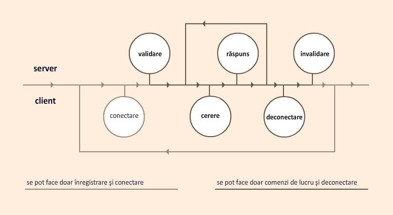
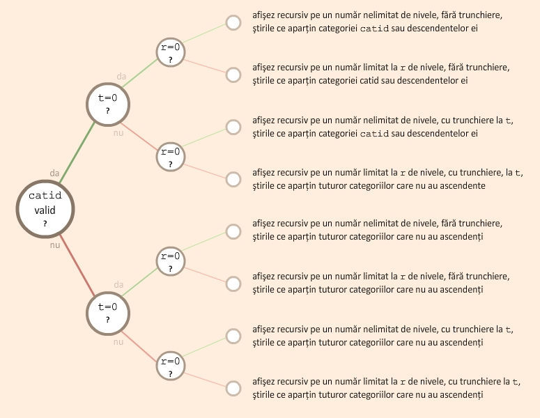
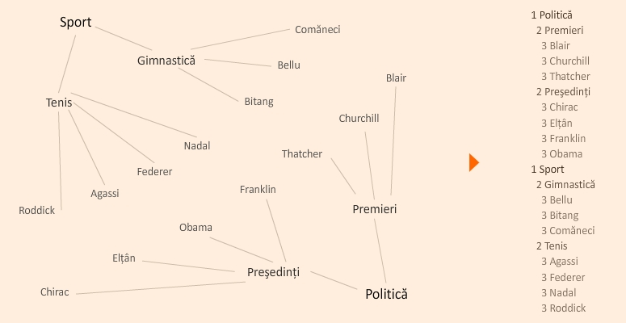

Comunicarea dintre client şi server se realizează prin intermediul unui protocol care permite accesul utilizatorilor şi gestiunea elementelor de conţinut (utilizator, categorie, ştire) de către utilizatorii care au drepturi pentru respectivele acţiuni.
Am implementat protocolul în baza protocolului TCP, comunicarea între procesele server şi clienţi realizându-se prin intermediul soclurilor BSD.
Protocolul gestionează trei elemente de conţinut: utilizatori, ştiri şi categorii.
Tabelul următor le prezintă, împreună cu acţiunile ce pot fi făcute asupra lor:
| elemente | semnificaţii | notaţii | date | limite | observaţii |
| utilizator | identificator | id | întreg | 0-∞ | generat unic |
| nume | username | string | 1-32 | unic | |
| parolă | password | string | 1-256 | ||
| permisiuni | permissions | întreg | 0-∞ | momentan | |
| moment | moment | dată & oră | generat | ||
| ştire | identificator | id | întreg | 0-∞ | generat unic |
| nume | name | string | 1-256 | ||
| text | text | string | 1-32768 | ||
| categorie | catid | întreg | 0-∞ | să existe | |
| propunător | pid | întreg | 0-∞ | să existe | |
| moment | moment | dată & oră | generat | ||
| categorie | identificator | id | întreg | 0-∞ | generat unic |
| nume | name | string | 1-256 | ||
| părinte | catid | întreg | +∞ | ||
| propunător | pid | întreg | 0-∞ | să existe | |
| moment | moment | dată & oră | generat |
Tabelul 1. Elemente de conţinut
Am gândit drepturile diferit de clasicul 0777 deoarece, spre deosebire de acesta, ele sunt incluse unele în altele. Astfel, dreptul devine un întreg şi, în varianta actuală a protocolului, împarte utilizatorii conectaţi în 5 categorii.
Nu am limitat drepturile la o valoare superioară, din motive de posibilă extindere a funcţionalităţilor. Momentan, drepturile recunoscute şi acţiunile posibile sunt:
| elemente | acţiuni | 4 | 3 | 2 | 1 | 0 |
| utilizator | modificare | •0 | •1 | •1 | •1 | •1 |
| ştergere | 2 | |||||
| vizualizare | • | •3 | •3 | •3 | •3 | |
| ştire | adăugare | • | • | • | ||
| modificare | • | •4 | •4 | |||
| ştergere | • | •4 | •4 | |||
| vizualizare | • | • | • | • | ||
| categorie | adăugare | • | • | |||
| modificare | • | •4 | ||||
| ştergere | • | •4 | ||||
| vizualizare | • | • | • | • |
0 poate modifica parola oricărui utilizator şi poate modifica parola şi drepturile oricărui alt utilizator
1 poate modifica parola proprie
2 nu poate şterge utilizatorii, dar poate seta drepturi 0
3 poate vizualiza doar contul propriu
4 le poate modifica sau şterge doar pe cele adăugate de el
Tabelul 2. Drepturi utilizatori conectaţi
Verificarea corectitudinii datelor se face la nivel de server, chiar dacă clientul poate avea măsuri suplimentare de siguranţă. Am aplicat acelaşi principiu ca la verificarea datelor în cadrul unui sit web realizat cu Javascript şi PHP: datele sunt verificate şi validate sau invalidate la nivelul formularului de către script, dar ele sunt validate în mod obligatoriu la preprocesare.
Modul de funcţionare poate fi descris de automatul echivalent cu expresia (CVL*D)*, unde:

Imaginea 1. Automat de funcţionare
Se face distincţie între conectarea/deconectarea procesului client şi conectarea/deconectarea utilizatorului de pe acel proces client. Ca exemplu, deşi un bancomat este rar conectat/deconectat de la reţea (proces), el permite conectarea/deconectarea (utilizator) multor trecători. În cele ce urmează, vom avea în vedere conectarea şi deconectarea utilizatorului.
Serverul primeşte de la client o comandă de conectare connuser cu date valide, în urma căreia comunicarea are loc în baza identităţii utilizatorului. La primirea de către server a unei comenzi de deconectare, de tipul dconnuser dinspre client, identitatea utilizatorului este pierdută, fără ca respectivul client să fie deconectat! Evident, la primirea a două comenzi care nu sunt succesive în expresie (de exemplu, două comenzi connuser între care nu există nicio validare şi apoi nicio comandă dconnuser), serverul nu permite reconectarea utilizatorului.
Acest mod de funcţionare este avantajos pentru comunicări intense, în care utilizatorul nu se schimbă. Exemple de comunicare în această idee pot fi cititoarele de ştiri automate, care se actualizează periodic, precum şi clienţii cu interfaţă, care blochează accesul utilizatorului la funcţionalitatea internă.
Înainte de fiecare cerere şi de fiecare răspuns, protocolul necesită transmiterea a exact 10 octeţi, în care este scris aliniat la dreapta numărul de octeţi pe care este scrisă cererea sau este scris răspunsul propriu-zis, care urmează.
Pentru toate cererile clientului, serverul poate întoarce unul din răspunsurile de mai jos. La acestea se adaugă răspunsurile specifice fiecărei cereri în parte. Răspunsurile de succes specifice cererilor înlocuiesc răspunsul implicit!
Prezentăm cererile protocolului, urmate de răspunsurile specifice. Notaţiile scrise cursiv vor fi înlocuite în comenzile reale cu valori cu respectivele semnificaţii.
Cererea de înregistrare se poate realiza doar când nu există utilizator conectat la acel client. O înregistrare efectuată cu succes nu duce la conectarea utilizatorului nou, ci trebuie realizată o comandă separată de conectare.
reguser|username|password
Înregistrează un utilizator cu o parolă şi, în caz de succes, întoarce identificatorul. Comanda oferă utilizatorului dreptul de valoare 1, de citire a ştirilor şi categoriilor. Se consideră validă dacă nu există deja un utilizator conectat.
Răspunsuri posibile:
moduser|id|password|permissions
moduser|id|password
Schimbă drepturile unui utilizator. Prima comandă se consideră validă dacă dreptul utilizatorului conectat e 4 şi id nu e identificatorul utilizatorului conectat. A doua comandă se consideră validă dacă există un utilizator conectat şi comanda se realizează numai asupra identificatorului propriu.
Răspunsuri posibile:
Utilizatorii nu pot fi şterşi. Ei pot fi modificaţi la drepturi 0, caz în care nu mai au acces la ştiri şi categorii.
Am ales această soluţie pentru a păstra autorii ştirilor şi categoriilor intacţi, chiar dacă le sunt revocate drepturile.
viewusers
Vizualizează utilizatorii şi, în caz de succes, întoarce identificatorul, numele şi drepturile fiecăruia. Se consideră validă dacă dreptul utilizatorului conectat e 4. Am ales această limitare deoarece uneori se doreşte ca identitatea utilizatorilor să fie secretă.
Răspunsuri posibile:
viewuser|id
Vizualizează un anumit utilizator şi, în caz de succes, întoarce date despre acesta. Se consideră validă dacă dreptul utilizatorului conectat e 4 sau există utilizator conectat cu acel id.
Răspunsuri posibile:
connuser|username|password
Conectează un utilizator cu o parolă şi, în caz de succes, răspunde cu identificatorul şi permisiunile sale. Se consideră validă dacă nu există un utilizator conectat.
Răspunsuri posibile:
dconnuser
Deconectează un utilizator. Se consideră validă dacă există deja un utilizator conectat la client.
Ştirile pot fi vizualizate de utilizatorii cu drepturi nenule şi gestionate de cei care au cel puţin dreptul 2.
addnew|name|text|catid
Adaugă o ştire şi, în caz de succes, răspunde cu identificatorul ştirii adăugate. Se consideră validă dacă dreptul utilizatorului conectat e 2, 3 sau 4.
Pentru catid, valoarea trebuie să existe!
Răspunsuri posibile:
modnew|id|name|text|catid
Modifică o ştire. Se consideră validă dacă dreptul utilizatorului conectat e 4 sau dacă dreptul utilizatorului conectat e 2, 3 sau 4 şi ştirea a fost adăugată de el.
Pentru id şi catid, valorile trebuie să existe!
Răspunsuri posibile:
delnew|id
Şterge o ştire. Se consideră validă dacă dreptul utilizatorului conectat e 4 sau dacă dreptul utilizatorului conectat e 2, 3 sau 4 şi ştirea a fost adăugată de el.
Pentru id, valoarea trebuie să existe!
Răspunsuri posibile:
viewnews|catid|r|t
Vizualizează ştirile şi, în caz de succes, întoarce nivelul, identificatorul, numele, textul, momentul şi identificatorul propunătorului. Se consideră validă dacă dreptul utilizatorului conectat e nenul.
Pentru catid, doar valoarea unei categorii valide filtrează ştirile după acea categorie.
Pentru r, doar dacă e nenul, se vizualizează doar ştirile de pe primele r nivele (pe nivelul 1, se află ştirile care sunt ataşate de categorii fără categorie părinte; pe nivelul 2, se află ştiri ataşate de categoriile ataşate de acestea etc.).
Pentru t, doar o valoare strict pozitivă ordonează ştirile invers cronologic şi trunchează la ultimele t ştiri per categorie.
Valorile 0 pentru aceşti ultimi doi parametri nu restricţionează datele.
Prezentăm mai jos arborele de decizie pentru această comandă:

Imaginea 2. Arbore de decizie
Răspunsuri posibile:
viewnew|id
Vizualizează o anumită ştire şi, în caz de succes, întoarce date despre aceasta. Se consideră validă dacă dreptul utilizatorului conectat e nenul.
Pentru id, valoarea trebuie să existe!
Răspunsuri posibile:
Categoriile pot fi vizualizate de utilizatorii cu drepturi nenule şi gestionate de cei care au cel puţin dreptul 3.
addcat|name|catid
Adaugă o ştire şi, în caz de succes, răspunde cu identificatorul ştirii adăugate. Se consideră validă dacă dreptul utilizatorului conectat e 3 sau 4.
Pentru catid, doar dacă există deja, se asociază cu părintele respectiv!
Răspunsuri posibile:
modcat|id|name|catid
Modifică o categorie. Se consideră validă dacă dreptul utilizatorului conectat e 4 sau dacă dreptul utilizatorului conectat e 3 sau 4 şi categoria a fost adăugată de el.
Pentru catid, dacă există, se asociază cu părintele respectiv; dacă este 0, se detaşează categoria de la părinte, dacă exista; altfel, nu se asociază/detaşează.
Pentru id, valoarea trebuie să existe!
Răspunsuri posibile:
delcat|id
Şterge o categorie. Se consideră validă dacă dreptul utilizatorului conectat e 4 sau dacă dreptul utilizatorului conectat e 3 sau 4 şi categoria a fost adăugată de el.
Pentru id, valoarea trebuie să existe!
Răspunsuri posibile:
viewcats
Vizualizează categoriile şi, în caz de succes, întoarce pentru fiecare nivelul, identificatorul şi numele în arbore. Procedura de citire parcurge arborele categoriilor în preordine! Se consideră validă dacă dreptul utilizatorului conectat e nenul.
Prezentăm mai jos un exemplu de vizualizare cu această comandă:

Imaginea 3. Exemplu de vizualizare
Răspunsuri posibile:
viewcat|id
Vizualizează o anumită categorie şi, în caz de succes, întoarce date despre aceasta, inclusiv strămoşii ei. Se consideră validă dacă dreptul utilizatorului conectat e nenul.
Pentru id, valoarea trebuie să existe!
Răspunsuri posibile:
Prezentăm mai jos un model de comunicare între client şi server, în care am marcat cu • sfârşitul mesajului: